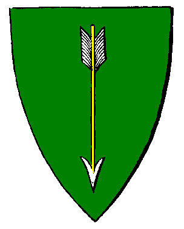

|

|
Das schwarze Brett
|
|
| Übersicht,
Anschläge und Stammtisch (RPG) |
|
Eine schmerzliche Nachricht
|
| Adelgunde Eisenhauer (RIP) |
Liebe Scherbenbewohner,
ich habe die traurige Aufgabe als Lehnsherrin, meinen Lehen Ossian als verschollen zu melden. Lange haben wir auf seine Rückkehr gehofft. Immer wieder die Wichtel befragt, ob sie etwas gehört haben, immer wieder negative Rückmeldungen. Niemand hat ihn gesehen oder etwas von ihm gehört. Wir müssen es leider einsehen und uns damit abfinden, das Ossian nicht mehr wiederkommen wird.
Somit erkläre ich hiermit, Kraft meiner Lehnsherrschaft, Ossian als verstorben.
Da ich mich nicht an einem Toten bereichern will, sollen alle Besitztümer inklusive der Stadt an die Nation An Roinn Cosanta übergehen.
Somit werde ich nun dem Nationsführer Graywolf of Nas`Quellan folge Besitztümer Ossians übergeben:
1.177.135 Goldstücke
Sachwaren, wie z.B einige k Getreide und Holz, Tran Petro und einiges mehr.
Desweiteren bekommt die Nation auch folgende Ausrüstungsgestände sowie Waffen und Rüstungen:
Schuppenpanzer, Kriegsbeile, Kettenhemden... Kamele, Elefanten
und diverse Heil- und Manawaren, wie Skits, Zigarren, Joints
Ich hoffe das Ossians Güter nun der Nation helfen werden und das sie in ehren gehalten werden, denn Ossian war für mich mehr als nur mein Lehe, er war auch ein sehr guter Freund von mir. Auch wenn er schon lange verschollen ist, ist es für mich noch schwer zu akzeptieren, das er nicht wieder kommt.
In großer Trauer
Adelgunde Eisenhauer
Freifrau Adelgunde Eisenhauer,
Verlobte des ehrenwerten Alberix, Sohn des Duglim
Zur 15. Stunde am 42.Erntemond im Jahre 427 |
14.01.07 23:05
 |
|
| Cyledea Talath (RIP) |
*liest den Anschlag, mit einen trauigen blick, schreibt sie was zurück*
Ich hoffe, er ist nicht verstorben und kommt bald wieder zurück
Die Wichteln können sich auch irren, vielleicht macht er eine große Reise und möchte die Scherbe erkunden
Doch wenn es so wirklich sei, traue ich um Ossian...
Hochachtungsvoll..
Cyledea Talath
Zur 16. Stunde am 42.Erntemond im Jahre 427 |
14.01.07 23:11
|
|
Arafíriel ô Athelas
  |
Wichtel irren sich äußerst selten, werte Cyledea Talath.
Mein Beileid in der Trauer um einen großen Mann.
Flockinatress Floxikon,
Kardinälin im Dienste des einzig wahren Glaubens an Pheron,
Triumvirin der Siedler der Freiheit
Zur 16. Stunde am 42.Erntemond im Jahre 427 |
14.01.07 23:17
|
|
Minos
  |
Mein Beileid, liebe Schwester.
Ja, die Wichtel können sich irren, doch ist dies nicht oft der Fall. Klammere dich daher nicht an Hoffnungen, die sich warscheinlich nicht erfüllen.
Mögest Du auf deinem neuen Weg in unserer Mitte Kraft und viele neue Freunde finden, die den Scherz lindern und das Andenken an alte Freunde nicht verblassen lassen.
Leumas,
Kardinal im Dienste des einzig wahren Glaubens an Urvan
Zur 17. Stunde am 42.Erntemond im Jahre 427 |
14.01.07 23:20
|
|
| Baromeus Lathien (RIP) |
Nun.. Ossian war auch ein guter freund vin mir, mitlehe und helfer als ich damals auf der Scherbe landete... es schmerzt mich nicht zu wissen was aus ihm geworden ist und ich hoffe das man ossians werk in seinem willen weiterführen wird.
in Trauer,
Baromeus Lathien,
Verlobter der reizenden Tarabea Lorenzo
Zur 17. Stunde am 42.Erntemond im Jahre 427 |
14.01.07 23:21
|
|
| Laurelin of Dórthoníôn-Coron (RIP) |
Es tut mir sehr leid, für die Leute, die diesen Mann kannten! Er schien etwas besonderes zu sein. Ich durfte ihn leider nicht mehr kennen lernen...
Lady Elena du Costa
Zur 21. Stunde am 42.Erntemond im Jahre 427 |
15.01.07 0:19
|
|
Felaria Mendalon
.GIF) |
allen angehörigen möchten wir unser beileid aussprechen sowie auch allen freunden und bekannten ..
Pfalzgräfin Felaria Mendalon,
Vorsteherin von Winternacht,
Anführerin der glorreichen Nation "Freie Grafschaft Winternacht",
Jurorin des Gedichtwettbewerbs der Zeitung
Zur 21. Stunde am 42.Erntemond im Jahre 427 |
15.01.07 0:24
|
|
Wurzelsepp
  |
Ossian...auch er nun...wieder ein Freund aus den alten Zeiten, der entschwindet. "Vermisst"...oft ist diese Meldung für die Angehörigen und Freunde des Kriegers schlimmer als "Gefallen" - läßt es doch Hoffnung, die selten erfüllt wird. Wo immer du bist, alter Kamerad: Urvan sei mit Dir!
Baron Wurzelsepp,
Vorsteher von Tannhausen,
Marschall der Allianz
Zur 5. Stunde am 44.Erntemond im Jahre 427 |
15.01.07 7:48
|
|
| Misha Theredith (RIP) |
hmm womöglich ist er bendurs weg gefolgt udn hat sich zuweit in die meere hinaus gewagt
vielleicht hat er sogar ein fremdes land gefunden, dass ihm so gefällt das er niht mehr wieder kommen mag
ja sowas wird er machen, mit einer ladung ruhm faul am strand rumhängen, die füsse im wasser und dauernd seien mannschaft rumkomandieren
möge dich bendur schützen udn zurück bringen lieber ossian
gez
misha
Lady Misha,
Verlobte des ehrenwerten Zeddicus
Zur 6. Stunde am 45.Erntemond im Jahre 427 |
15.01.07 13:39
|
|
Logan
 |
Die Hoffnung stirbt zuletzt, und andererseits ist sie die schlimmste Art der Folter.
Bendur mit dir mein Freund, auf das wir uns bald wiedersehen.
Freiherr Logan,
Vorsteher von Garden of Honor,
Bogenmeister der Südlichen Allianz
Zur 7. Stunde am 45.Erntemond im Jahre 427 |
15.01.07 13:49
|
|
| Smoin cónuî Amdîr (RIP) |
Leb wohl, mein Freund! Wir sehn uns wieder!
Pfalzgraf Smoin cónuî Amdîr,
Vorsteher von Bár Amdîr,
Anführer der glorreichen Nation "Wahrer der Freiheit",
Befehlshaber der Freiheitstruppen,
Verlobter der reizenden Seraphine Thálra,
Teilnehmer des Gedichtwettbewerbs der Zeitung
Zur 9. Stunde am 45.Erntemond im Jahre 427 |
15.01.07 14:17
|
|
| Graywolf of Nas`Quellan (RIP) |
Wie heist es bei Ihm immer so schön, abwarten und Rum trinken.
Vielleicht hat ja Ostera zu ihren Feiertag Mitleid mit uns und bringt ihm zurück.
Sir Graywolf of Nas`Quellan,
Anführer der glorreichen Nation "An Roinn Cosanta"
Zur 13. Stunde am 45.Erntemond im Jahre 427 |
15.01.07 15:22
|
|
| Whisler (RIP) |
*ein Zwerg mit Kapuze kommt vorbei und heftet ein Stück Papier hinzu*
Ich werde ihn in meine gebete einschliessen er wahr ein besonder Mensch. Ich werde nie vergessen wie er mich damals mit Offenen Armeen begrüsste er wahr in der Zeit wie ich auf Edubo lebte wie ein Vater für mich.
*Kniet sich nieder und sied stumm seinen Anschlag und geht dann etwas niedergeschlagen fort*
Freiherr Whisler,
Vorsteher von Stern der Franken
Zur 13. Stunde am 48.Erntemond im Jahre 427 |
16.01.07 8:00
|
|
| Smoin cónuî Amdîr (RIP) |
Und ich fordere sein Hab und Gut zurück(also nicht an mich), auf dass es ihm übergeben wird. ICH habe ihn nämlich neulich erst gesehen...
Pfalzgraf Smoin cónuî Amdîr,
Vorsteher von Bár Amdîr,
Anführer der glorreichen Nation "Wahrer der Freiheit",
Befehlshaber der Freiheitstruppen,
Verlobter der reizenden Seraphine Thálra,
Teilnehmer des Gedichtwettbewerbs der Zeitung
Zur 20. Stunde am 49.Erntemond im Jahre 427 |
16.01.07 15:26
|
|
| Cyledea Talath (RIP) |
erst ist da? ihr habt ihn gesehen....
Habe ich doch Recht gehabt, dass er lebt?
Und wo soll er denn gewesen sein, wenn ihr ihn gesehen habt.....
Cyledea Talath
Zur 24. Stunde am 49.Erntemond im Jahre 427 |
16.01.07 16:10
|
|
| Smoin cónuî Amdîr (RIP) |
Ich denke, dass gehört nicht so öffentlich hierher. Schreibt ihn doch an, wenn er es wünscht, so werdet ihr sicherlich erfahren, wo er ist...
Pfalzgraf Smoin cónuî Amdîr,
Vorsteher von Bár Amdîr,
Anführer der glorreichen Nation "Wahrer der Freiheit",
Befehlshaber der Freiheitstruppen,
Verlobter der reizenden Seraphine Thálra,
Teilnehmer des Gedichtwettbewerbs der Zeitung
Zur 8. Stunde am 50.Erntemond im Jahre 427 |
16.01.07 18:15
|
|
Sojus Bane
 |
*sucht nun oftmals den südlichen Meereshorizont ab, um vielleicht ein hoffunggebendes Segel zu erblicken*
Pfalzgraf Sojus Bane,
Vorsteher von Bengalore,
Anführer der glorreichen Nation "Südliche Allianz",
Ehemann der reizenden Minuiriel O Ithil
Zur 15. Stunde am 50.Erntemond im Jahre 427 |
16.01.07 19:46
|
|
| Viviane (RIP) |
*liest den anschlag und kann es kaum glauben*
Ossi......wieso konnte das passieren? Ich weiss,dass Du ein guter Seefahrer warst,sollte Dich etwa das Meer verschlungen haben?
*muss lächeln trotz der traurigkeit die in ihr ist,als sie an den letzten gemeinsamen abend auf long island denkt,wo sie abschied genommen hat um in ein neues leben zu gehen,sie gemeinsam ein fass rum leerten und er ihr das versprechen abnahm,sich regelmässig zu melden*
Lieber Ossi,lange Zeit sind wir gemeinsam einen Weg gegangen *denkt an die gemeinsame zeit*
Wir haben einiges zusammen durchgemacht,ich werde Dich sehr vermissen und die Erinnerung an Dich in ewigen Ehren halten
*kann die tränen nicht mehr zurückhalten,wendet sich ab und verlässt den marktplatz*
Freifrau Viviane Dragus,
Vorsteherin von Beldhar,
Ehefrau des ehrenwerten Turiandor Dragus
Zur 12. Stunde am 57.Erntemond im Jahre 427 |
18.01.07 10:14
|
|
Turiandor Dragus
 |
Ossian, ich kann es auch kaum fassen, das dich deine nautischen Fähigkeiten im Stich gelassen haben sollen *stockt etwas*
Ich habe versucht dir bei der Verwirklichung deiner Träume zu helfen, doch scheinbar hat das Schicksal dem einen Streich gespielt. Einen bösen Streich. *wirkt sehr ernst, Trauer ist in den Augen des Elfen zu erkennen*
Ossian, mögen die Winde dir Gnädig sein und dich zu uns zurück treiben.
*folgt dann seiner Frau um Ihr Kraft zu spenden*
Graf Turiandor Dragus,
Vorsteher von Vertana,
Ehemann der reizenden Viviane Anoriel,
Schwertmeister der Vertex
Zur 21. Stunde am 59.Erntemond im Jahre 427 |
18.01.07 23:42
|
|
Übersicht,
Anschläge und Stammtisch (RPG)
|
|
|
|
Dieser Beitrag
verwendet Regelvariante 3
 |
|
|


.GIF)